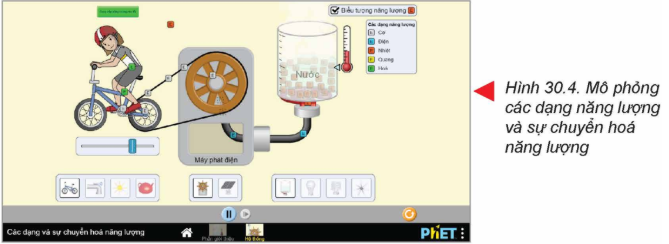
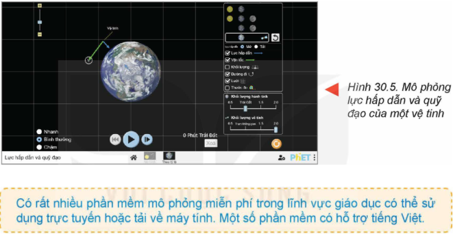
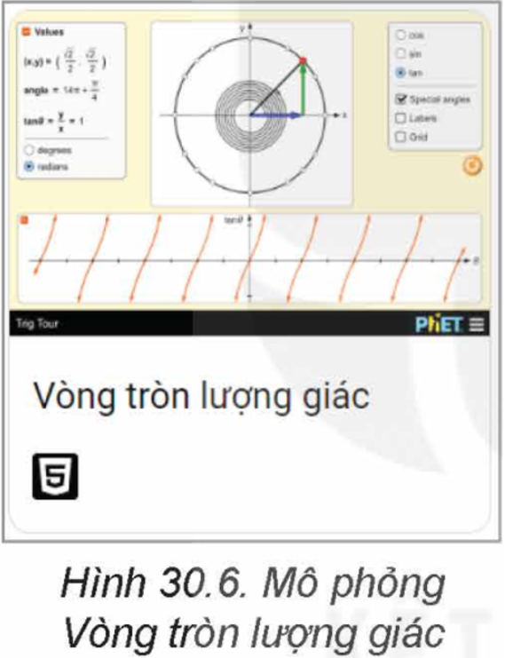
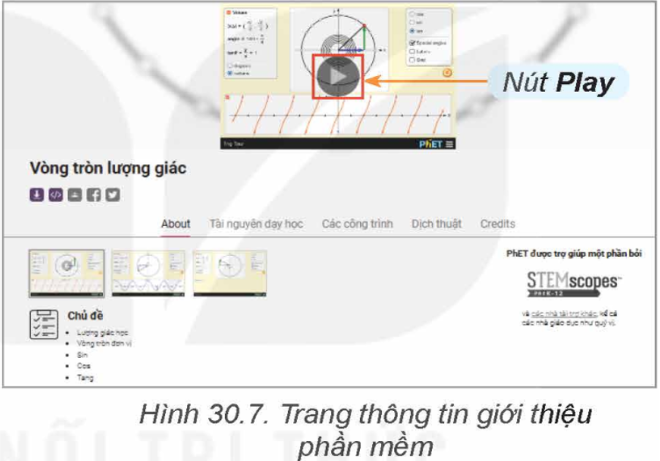
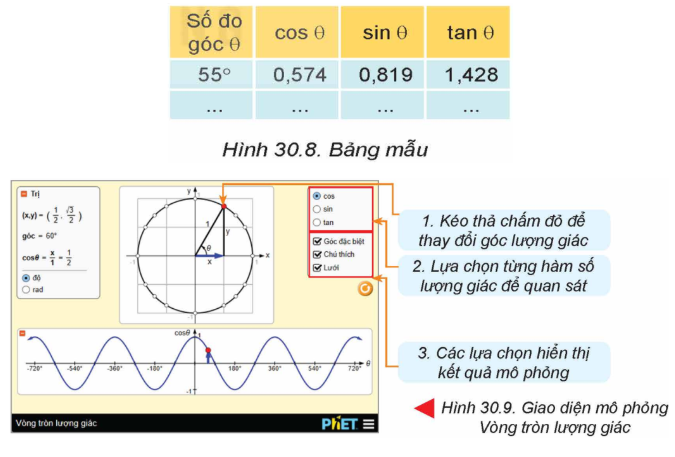

ỨNG DỤNG MÔ PHỎNG TRONG GIÁO DỤC
1. GIỚI THIỆU MỘT SỐ PHẦN MỀM MÔ PHỎNG TRONG GIÁO DỤC
- Trong nhà trường, nhiều môn học có sử dụng phần mềm mô phỏng ứng dụng trong dạy và học. Ví dụ:
+ GeoGebra: Phần mềm mô phỏng ứng dụng trong dạy học, đặc biệt trong toán học.
+ Bộ phần mềm và công cụ PhET: cung cấp các công cụ và phần mềm mô phỏng tương tác trực tuyến đa lĩnh vực (Vật lí, Hóa học, Toán học, …)
+ Phần mềm Avogadro: cho phép mô phỏng và thiết kế phân tử hóa học ở các cấp độ khác nhau.
+ Phần mềm Gplates: cho phép mô phỏng sự biến đổi của các lục địa, địa mạo và địa chất.
+ Phần mềm Yenka: cho phép quan sát trực quan các thí nghiệm thuộc các lĩnh vực Toán, Lí, Hóa, …
+ Các phần mềm mô phỏng của Concord Consortium: cho phép tương tác với các phân tử hoặc hiện tượng vĩ mô theo nhiều cách khác nhau.
- Các phần mềm này đều miễn phí. Một số cần tải về để cài đặt và sử dụng trên máy tính cá nhân, số còn lại có thể sử dụng trực tuyến nếu có kết nối Internet.
- Sau đây ta sẽ làm quen với bộ công cụ PhET: phet.colorado.edu cho phép tương tác với nhiều mô hình khoa học và toán học bằng cách thay đổi tham số và điều kiện, từ đó quan sát kết quả một cách trực quan.
+ Mô phỏng về lực và chuyển động: với trò chơi Khách bộ hành, giúp diễn giải, tiên đoán và xác định, vận tốc và gia tốc cho các trường hợp thường gặp:
+ Mô phỏng sự chuyển hóa năng lượng: giúp người dùng làm quen với các dạng năng lượng và sự chuyển hóa giữa chúng:
+ Mô phỏng chuyển động (vận tốc, quỹ đạo,...) của các vật thể trong không gian trong mối quan hệ với lực hấp dẫn:
2. THỰC HÀNH: Sử dụng một số phần mềm mô phỏng trong giáo dục
(Phần mềm mô phỏng trong lĩnh vực giáo dục được sử dụng để thực hành là phần mềm trực tuyến PhET).
Nhiệm vụ 1: Sử dụng phần mềm mô phỏng toán học
Yêu cầu: Biết cách sử dụng phần mềm mô phỏng toán học.
Hướng dẫn:
Bước 1. Truy cập trang web phet.colorado.edu.
Bước 2. Trên trang chủ PhET, nháy chuột chọn biểu tượng môn Toán để mở danh sách các phần mềm mô phỏng toán học.
Bước 3. Nháy chuột chọn mô phỏng Vòng tròn lượng giác (Hình 30.6).

Bước 4. Đọc hiểu các thông tin giới thiệu về phần mềm. Sau đó, nháy chuột chọn nút (hình 30.7) để kích hoạt mô phỏng.

Bước 5. Tương tác với phần mềm mô phỏng bằng cách thay đổi các thông số (Hình 30.9). Ghi lại khoảng 5 kết quả quan sát được vào bảng theo mẫu ở Hình 30.8.

Bước 6. Thảo luận và nhận xét về lợi ích cũng như tính ứng dụng của mô phỏng Vòng tròn lượng giác. So sánh việc thực hiện mô phỏng tương tự ở phần mềm khác, chẳng hạn GeoGebra.
Nhiệm vụ 2: Khám phá mô phỏng khoa học
Yêu cầu:
Thực hiện theo hướng dẫn để khám phá một mô phỏng khoa học bất kì.
Hướng dẫn:
Bước 1. Truy cập trang chủ của PhET và nháy chuột chọn biểu tượng môn thuộc lĩnh vực khoa học mà em thích.
Bước 2. Nháy chuột chọn một phần mềm mô phỏng trong bộ sưu tập của môn học đó mà em muốn khám phá.
Bước 3. Quan sát tương tác và thảo luận để trả lời các câu hỏi sau:
1. Có thể thay đổi các thông số nào của phần mềm?
2. Tương tác với phần mềm bằng cách nào?
3. Kết quả của phần mềm bao gồm những gì?
4. Lợi ích của phần mềm này là gì?
5. Những hạn chế nếu có khi tạo ra thí nghiệm này ngoài đời thực là gì?
Gợi ý một vài tương tác có thể thực hiện với phần mềm mô phỏng PhET:
Các phần mềm mô phỏng trong PhET cho phép người dùng thay đổi các thông số cũng như các yếu tố trong mô hình ảo để quan sát, dự báo kết quả hoạt động của mô hình. Chẳng hạn, với phần mềm mô phỏng Các dạng năng lượng và sự chuyển hóa năng lượng ở Hình 30.4, khi nháy chuột vào nút  ở vị trí bên dưới, chính giữa màn hình, mô hình ảo sẽ hoạt động, cho ta thấy sự chuyển hóa năng lượng như sau:
ở vị trí bên dưới, chính giữa màn hình, mô hình ảo sẽ hoạt động, cho ta thấy sự chuyển hóa năng lượng như sau:
- Khi người đạp xe, hóa năng () có trong thức ăn con người được chuyển thành cơ năng (). Cơ năng làm quay máy phát
Kết luận
Phần mềm mô phỏng trong giáo dục giúp học sinh quan sát trực quan, tương tác với các hiện tượng khoa học.
Một số phần mềm phổ biến: PhET (đa lĩnh vực), Avogadro (hóa học), Gplates (địa chất), Yenka (Toán, Lý, Hóa), Concord Consortium.
Thực hành với PhET:
1.Mô phỏng toán học: Truy cập trang PhET, chọn mô phỏng Vòng tròn lượng giác, thay đổi thông số và ghi kết quả.
2.Mô phỏng khoa học: Chọn mô phỏng yêu thích, tương tác và trả lời câu hỏi về thông số, kết quả, lợi ích, hạn chế.
Lợi ích: Học tập trực quan, dễ hiểu, không cần thí nghiệm thực tế.